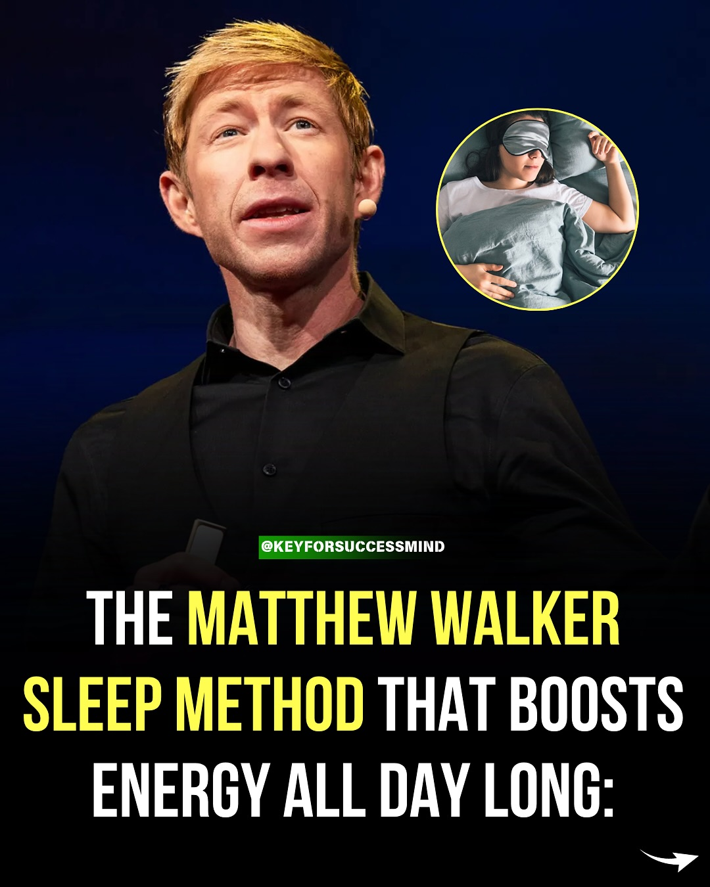
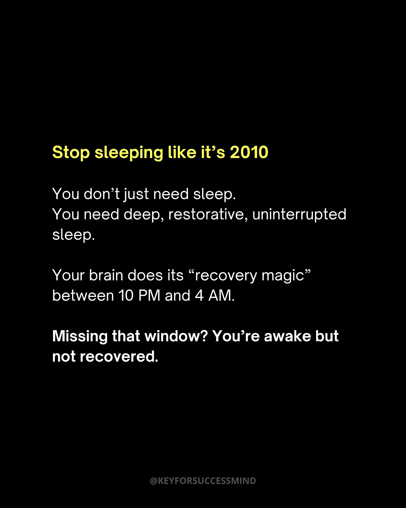
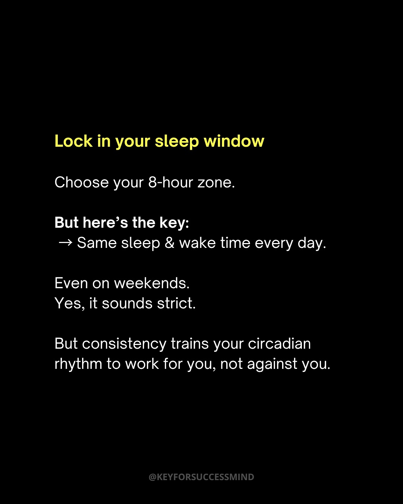
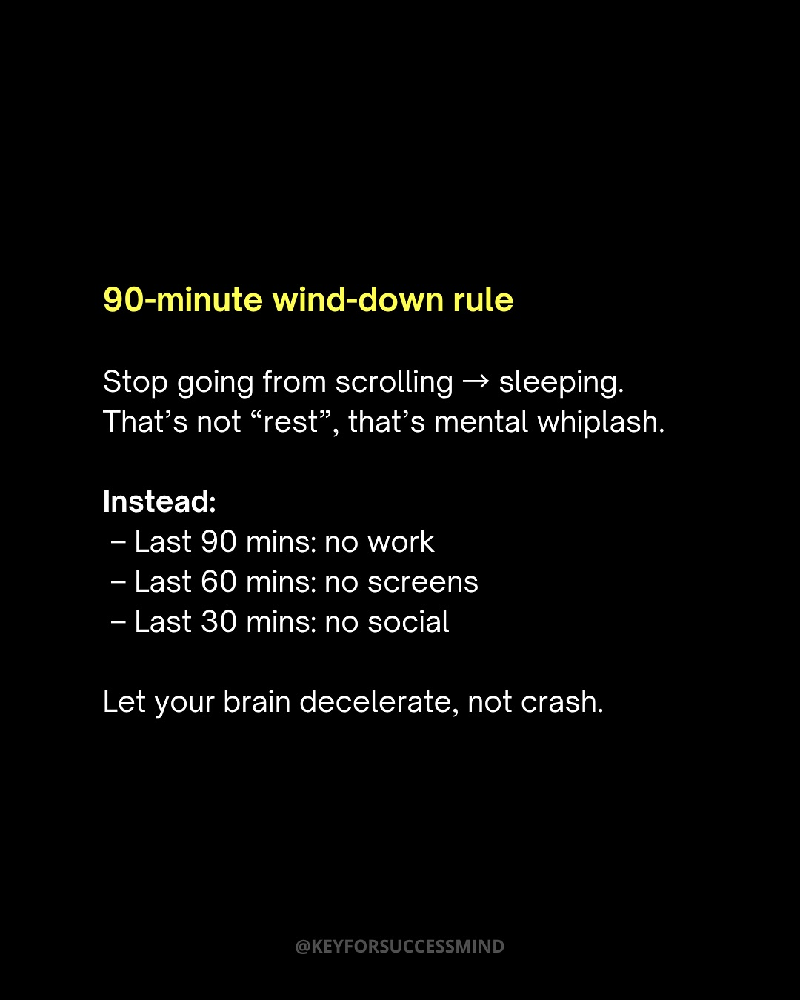
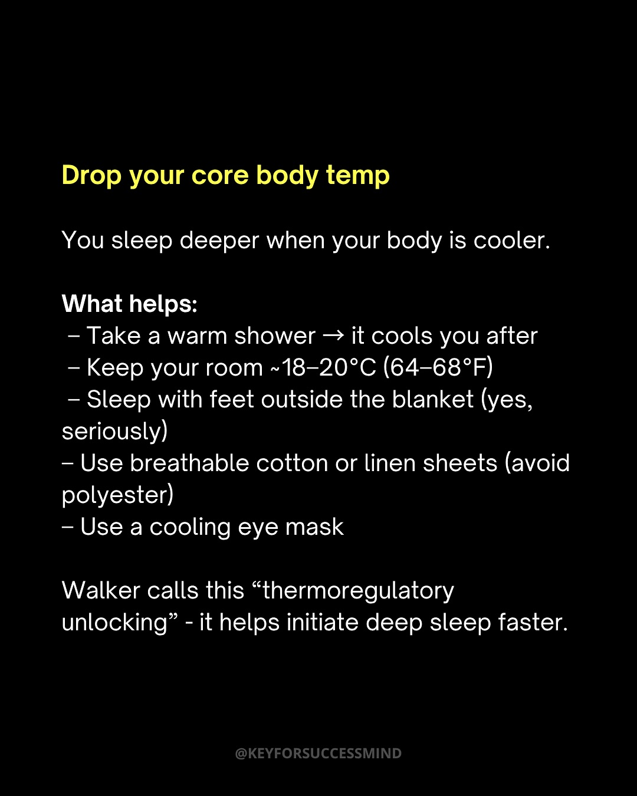
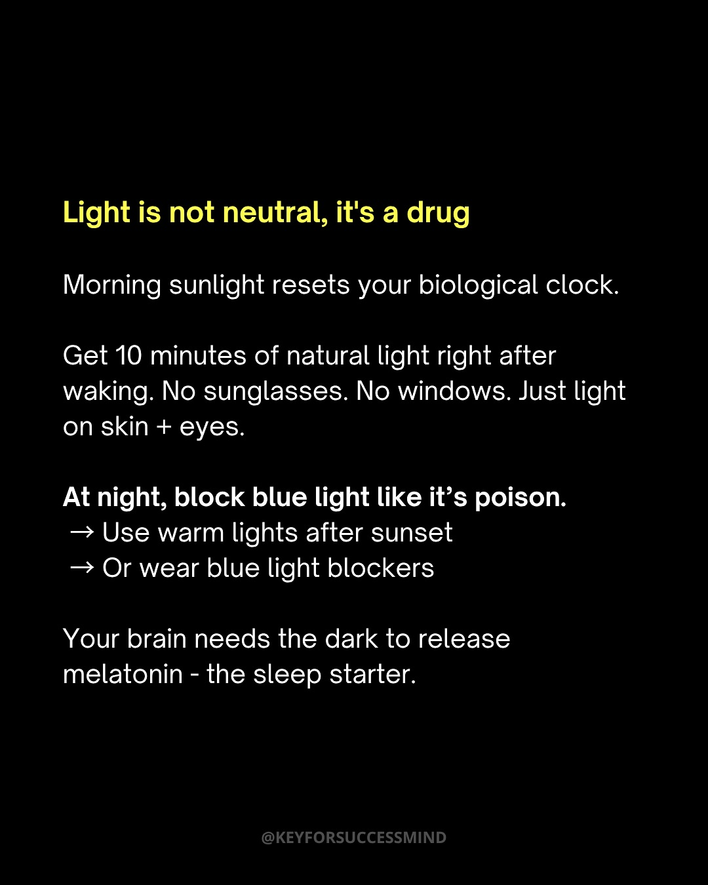
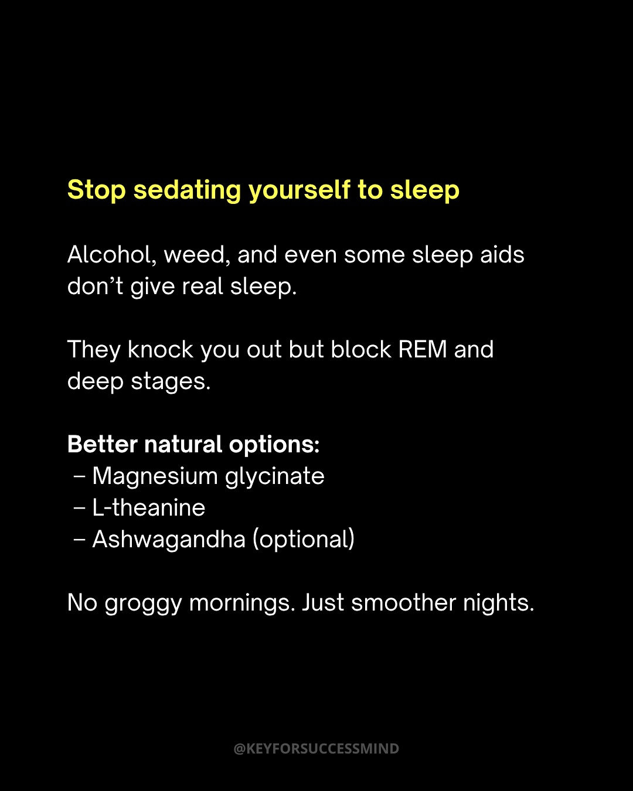
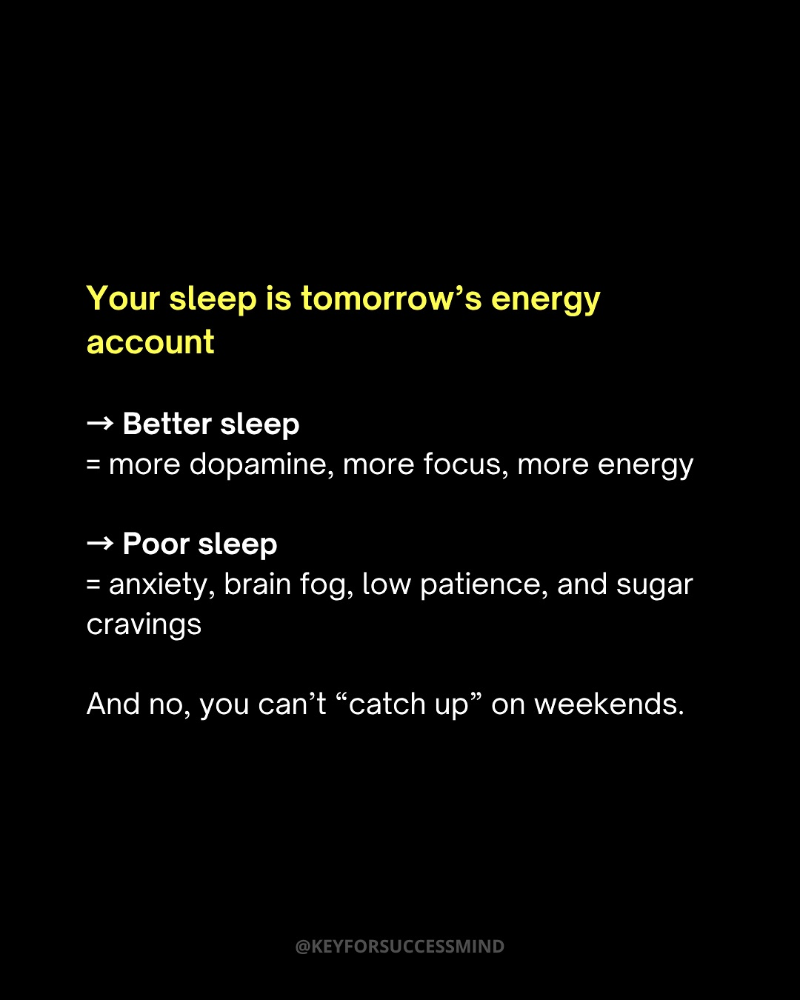
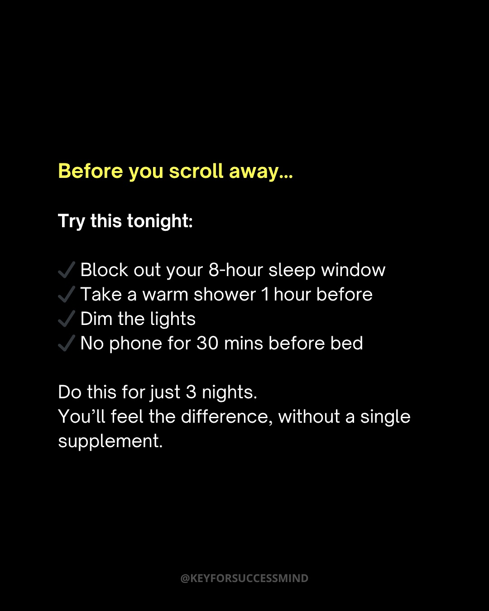

Instagram Post

Let’s be honest - Real change doesn’t happen...
carousel (10 slides) (enriched by ClaudeClaw)
Summary
THE MATTHEW WALKER SLEEP METHOD THAT BOOSTS ENERGY ALL DA... | Stop sleeping like it's 2010 You don't just need sleep | Lock in your sleep window Choose your 8-hour zone | 90-minute wind-down rule Stop going from scrolling → slee... | Drop your core body temp You sleep deeper when your body ... | Light is not neutral, it's a drug Morning sunlight resets... | Stop sedating yourself to sleep Alco...
Caption
Let’s be honest - Real change doesn’t happen overnight.
But it does happen when you decide to stop scrolling and start acting.
The Habit Manifesto isn’t just a book. It’s a wake-up call for the part of you that’s tired of starting over.
Inside, you’ll find tools to build habits that stick, routines that actually serve you, and a mindset that doesn’t break under pressure.
Already helped 1000+ readers shift their lives.
You’re not late. You’re just one decision away.
Grab your copy now from the link in bio.
Link in bio 👉 @keyforsuccessmind
If today’s post hit something real, follow @keyforsuccessmind for more no-fluff growth content.
Appreciate you being here.⚜️
1
@KEYFORSUCCESSMIND THE MATTHEW WALKER SLEEP METHOD THAT BOOSTS ENERGY ALL DAY LONG:
A man with blonde hair is speaking, with a circular inset image of a woman sleeping with an eye mask, and text overlay about a sleep method.
2
Stop sleeping like it's 2010 You don't just need sleep. You need deep, restorative, uninterrupted sleep. Your brain does its "recovery magic" between 10 PM and 4 AM. Missing that window? You're awake but not recovered. @KEYFORSUCCESSMIND
A social media post displays text on a black background, discussing the importance of deep, restorative sleep and the brain's recovery window.
3
Lock in your sleep window Choose your 8-hour zone. But here's the key: → Same sleep & wake time every day. Even on weekends. Yes, it sounds strict. But consistency trains your circadian rhythm to work for you, not against you. @KEYFORSUCCESSMIND
A social media post with white and yellow text on a black background, providing advice on establishing a consistent sleep schedule.
4
90-minute wind-down rule Stop going from scrolling → sleeping. That's not "rest", that's mental whiplash. Instead: – Last 90 mins: no work – Last 60 mins: no screens – Last 30 mins: no social Let your brain decelerate, not crash. @KEYFORSUCCESSMIND
A digital infographic on a black background presents a "90-minute wind-down rule" with bullet points and explanatory text.
5
Drop your core body temp You sleep deeper when your body is cooler. What helps: - Take a warm shower → it cools you after - Keep your room ~18-20°C (64-68°F) - Sleep with feet outside the blanket (yes, seriously) - Use breathable cotton or linen sheets (avoid polyester) - Use a cooling eye mask Walker calls this “thermoregulatory unlocking” - it helps initiate deep sleep faster. @KEYFORSUCCESSMIND
A social media post or slide with white and yellow text on a black background, providing tips on how to lower core body temperature for deeper sleep.
6
Light is not neutral, it's a drug Morning sunlight resets your biological clock. Get 10 minutes of natural light right after waking. No sunglasses. No windows. Just light on skin + eyes. At night, block blue light like it's poison. → Use warm lights after sunset → Or wear blue light blockers Your brain needs the dark to release melatonin - the sleep starter. @KEYFORSUCCESSMIND
A digital infographic with white and yellow text on a black background, providing advice on light exposure for sleep and biological clock regulation.
7
Stop sedating yourself to sleep Alcohol, weed, and even some sleep aids don't give real sleep. They knock you out but block REM and deep stages. Better natural options: – Magnesium glycinate – L-theanine – Ashwagandha (optional) No groggy mornings. Just smoother nights. @KEYFORSUCCESSMIND
A social media post with white and yellow text on a black background, discussing sleep and natural alternatives, framed by navigation arrows and pagination dots.
8
Your sleep is tomorrow's energy account → Better sleep = more dopamine, more focus, more energy → Poor sleep = anxiety, brain fog, low patience, and sugar cravings And no, you can't “catch up” on weekends. @KEYFORSUCCESSMIND
A social media post or infographic displays text on a black background, discussing the benefits of better sleep and the negative effects of poor sleep.
9
Before you scroll away... Try this tonight: Block out your 8-hour sleep window Take a warm shower 1 hour before Dim the lights No phone for 30 mins before bed Do this for just 3 nights. You'll feel the difference, without a single supplement. @KEYFORSUCCESSMIND
A social media post on a black background displays sleep improvement tips in white and yellow text, with navigation arrows and dots suggesting it is part of a carousel.
10
This isn't one of those tips you read and forget. Save it. Try it tonight. (P.S. If you still haven't grabbed our Habit Playbook, hit the link in our bio before you forget.) @KEYFORSUCCESSMIND
A social media post with white and yellow text on a black background, featuring navigation arrows and dots, suggesting it is part of a carousel.
All slides







